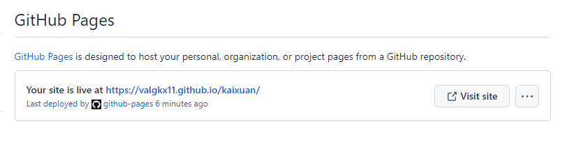

- Without CSS only HTML is involved
Before I created the website, I thought about a simple template for my "About" page.
After creating the sufficient HTML and CSS files, I uploaded my website to GitHub. I go through the steps on how to do this below, click here to jump to that.
I tried to make this website as adaptable as possible so you can view it in almost any window size. But of course there are some images with a specified size so they may be only viewed to full on a computer screen.
To start off I watched Learn CSS in 12 Minutes by Jake Wright. You should watch this if you want to get a simple understanding of website layouts.
I first created a HTML file called about.html, note that the first page of your website must be called index.html but subsequent ones can have any name of your choice. Next I gave my page a title, a header, some content (body) and a footer. I then reorganised the body content into different divisions with different IDs. I later added in a navigation bar, for this I will go into more details later on.
To make my wesite look the way it is, I used a stylesheet written in CSS called style.css. This is what makes the website have an organised and aesthetic feel to it. Without this, the website would just be very plain and full of text without any design or filled with misaligned images and texts. To use this stylesheet you need to link it to your HTML file in the head segment.
There are many other elements in this website that also made use of CSS stylesheets.
This is what my about.html file contains. I will talk about the navigation bar later on.
This is what my style.css file contains for the 'About' page. I changed my font to the current one by adding a link in the html file as you can find above. This font "Oxygen Mono" by Veron Adams can be found here.
How do you setup a website through GitHub?
Firstly, create an account on GitHub.com
Next, download GitHub Desktop, this will be the place we create our repositories. Make sure you are logged in.
Next, create a new repository with what ever name you want it to be. Make sure you know the path of this so you can find it in your own local drive.
Next, publish this repository to GitHub.com. Make sure to uncheck "Keep this code private" so that is can be viewed publicly.
Next, add whatever files you want into this repository file found in your own local drive. make suer to include your index.html file. In that folder should already contain some files, do not remove them. Once you are done, you have to 'commit to main' and 'push to origin' so that the changes made are logged into the system.
Finally, go to GitHub.com and check that your repository is updated. Head over to settings > pages and follow my settings in the picture down below so that you get the link to your website. This is the address of your website.
And you are done! Remember to commit to main when you add or change some things in your respository and also push to origin so that your website is updated.